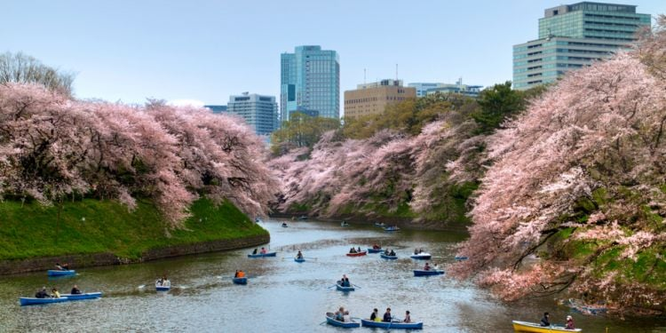

Tokyo, la capitale dynamique du Japon où tradition et modernité se rencontrent pour créer une expérience urbaine incomparable. Tokyo est une métropole tentaculaire, pulsante d'énergie,où chaque coin de rue raconte une histoire fascinante.

Au cœur de cette mégapole se trouve une juxtaposition étonnante d'ancien et de nouveau. Des temples millénaires comme le célèbre Senso-ji à Asakusa se dressent fièrement à côté de gratte-ciel étincelants et de quartiers ultramodernes comme Shibuya et Shinjuku. Perdez-vous dans les ruelles étroites de Yanaka pour découvrir un aperçu de l'ancien Edo, ou plongez dans l'effervescence de la vie nocturne de Roppongi pour une soirée mémorable.
Tokyo est également un paradis pour les amateurs de cuisine. Des stands de ramen modestes aux restaurants étoilés au guide Michelin, la diversité culinaire de la ville est à couper le souffle. Ne manquez pas de déguster des sushis frais au marché aux poissons de Tsukiji ou de savourer des délices de rue dans les quartiers animés comme Harajuku.


Les hôtels de luxe à Tokyo ne manquent pas de faire tourner les têtes, offrant des vues panoramiques sur la ville, des intérieurs élégants et des services dignes de la royauté. Des établissements emblématiques tels que le Park Hyatt Tokyo, rendu célèbre par le film "Lost in Translation", et le Mandarin Oriental Tokyo, situé dans la tour Nihonbashi Mitsui, offrent une expérience incomparable de l'hospitalité japonaise.